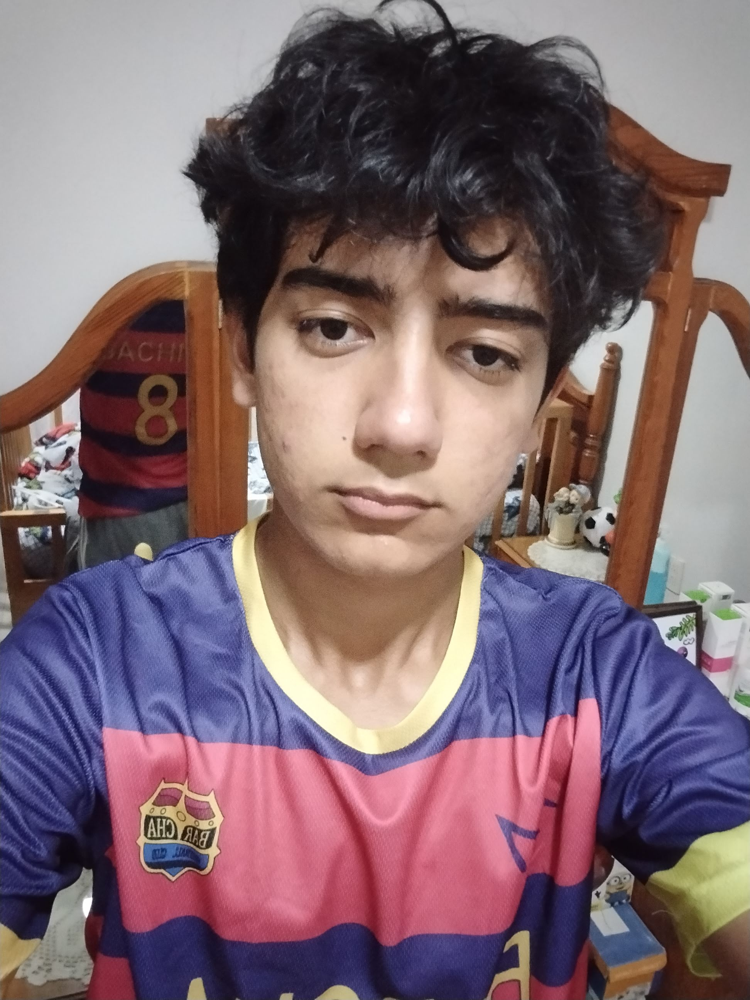
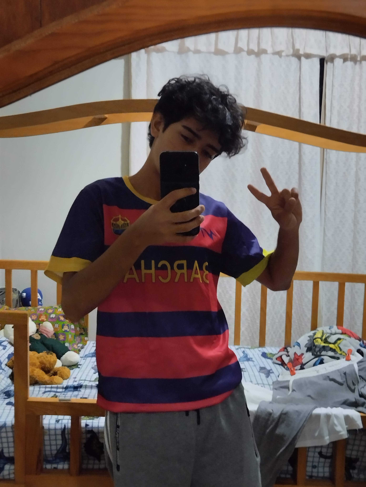

Hola, mi nombre es Francisco Emmanuel Becerra Sahagún. Tengo 16 años de edad, actualmente estudio la especialidad de contabilidad en el Cbtis 49, en estos momentos curso el segundo semestre, mis intereses principales son escuchar música, jugar videojuegos, el deporte (específicamente el futbol, la calistenia y el básquet), también me gusta pasar tiempo con mis amigos y seres queridos y disfrutar de la tranquilidad de la naturaleza y sobre todo de la vida.

Mis logros y retos
Algunos de mis logros son reconocimientos, a partir de segundo año de secundaria hasta el primer semestre de preparatoria, me han dado reconocimientos por excelencia de calificaciones, ya sea primer, segundo o tercer lugar. No he tenido situaciones difíciles, todas las materias de la preparatoria me gustan y siempre encuentro la forma de como superarlas y lograr la excelencia, solo que si he tenido algunas dificultades, por ejemplo, en la secundaria en primero no le dedicaba mucho, así que me fue mas o menos mal, ya a partir de segundo fue cuando llego la excelencia. Al principio me asustaba el Cbtis debido a su ¨dificultad¨ que las materias presentaban, pero gracias a que tengo un buen grupo de amigos que somos muy trabajadores y nos hemos apoyado entre todos, hemos logrado sobresalir, aunque en el primer semestre el primer parcial me fue mal en la materia de Lengua y comunicación, en el examen, igualmente por una vez en Ciencias sociales, en el mismo semestre pero en el tercer parcial, ya que fue porque llegamos un poco tarde a su clase y no nos quiso dejar pasar, y pienso yo que nos bajo puntos por eso. Aun así, siempre he tratado de mantenerme firme en la excelencia y no bajar los ánimos ante las materias, actualmente llevo un buen promedio y seguiré esforzándome para que cuando salga de la preparatoria me lleve una muy buena y excelente calificación.
Proyectos realizados
He elaborado proyectos que me han gustado mucho, durante el curso de la secundaria y preparatoria, en la secundaria en el segundo año, en la materia de Física elemental elaboramos distintos proyectos relacionados a la materia, entre ellos un paracaídas, un cohete, uno sobre levitación magnética, entre otros, en la materia de Español también elaboraba tipo historietas o carteles que me dedicaba haciéndolos. Ahora en la preparatoria, esta llena de proyectos jeje, en el primer semestre recuerdo que hicimos nieve de garrafa, elaboramos una historieta, hicimos muuuuuchas exposiciones, así como en Lengua y comunicación elaboramos un proyecto de vida, ah también hicimos un impermeable casero y muchos mas que me faltaron por mencionar, la verdad aprendí mucho de ellos, estuvieron muy entretenidos y lo mas importante es que yo y mis compañeros nos divertimos elaborándolos.
La verdad, no tengo muchas metas a futuro, simplemente vivo, no se que quiera ser en un plazo de 30 años, solo se que estos momentos los debo de disfrutar, contabilidad no fue que yo la haya escogido, sino que el destino la puso en mi camino, debido a que yo no escogí contabilidad, yo había seleccionado programación, electricidad y mecánica, pero como estaba todo lleno, al cambiarme de turno también me toco en contabilidad, de igual forma me gusta mucho, a mí las matemáticas me apasionan y contabilidad tiene mucho que ver, aunque a veces si me estresa jajaja, esta carrera me servirá mucho por un tema que me apasiona, que serian las finanzas y todo lo relacionado. Al terminar, quizás me tome año sabático para entrar a la universidad porque aún no sé qué estudiar después de la preparatoria, contador no seré, tampoco doctor, simplemente pensare que es bueno para mi y si no, podre un negocio yo mismo. En el aspecto de habilidades me encantan los deportes, más el futbol, pero recientemente he sentido que no podre destacar en ellos, solo juego por pasatiempo, porque realmente me gustan, pero no soy muy bueno, es cierto que mejoro continuamente pero no lo suficiente como para competir o vivir de ello. Lo cierto es que me gusta jugar por mis amigos, porque las personas que siempre convivo que siempre nos reímos que siempre nos apoyamos, están ahí, jugando, divirtiéndonos, aunque algunos sean muy competitivos, egoístas, algunos si enseñan, como a mi que no se jugar muy bien jeje, es lo que verdaderamente me gusta de hacer deporte. De igual manera habilidades me gustan muchas, cocinar, jugar ajedrez, armar cubos Rubik, hacer postres, en esta vida me gustaría aprender de todo, aunque sea un poco, porque he analizado y me encanta ver como otra gente lo realiza, ese sazón cuando mi madre hace sus comidas, las emocionantes partidas de ajedrez que los profesionales juegan, las deliciosas comidas que hace y vende la gente, me gustaría aprender y cuando tenga oportunidad, le dedicare tiempo en ellos porque es algo que me encanta, aunque diga que no tengo tiempo, puedo hacer un espacio para ello. En el aspecto de objetivos pues, solo deseo mantener la excelencia en mis calificaciones, mejorar en ciertos deportes, aprender nuevas habilidades, leer unos cuantos libros y si es posible, realizar actividades que me generen ingresos, para ayudarme a mí y ayudar a mis padres, ya que literalmente ellos me lo han dado todo. En un futuro lejano me veo exitoso, seguiré mi camino, aunque a veces no pueda más, aunque me sienta arto, estresado, decaído, aunque sienta que necesito apoyo y no lo consiga, me mantendré de pie, firme en mi objetivo, ya que será lo que mas me haga feliz en esta vida, y así regresarle todo lo que mis padres me han dado en estos 16 años de vida.

Lecciones de vida
Lo mas importante de la vida misma es, disfrutar cada momento, disfrutar cada instante, sea con las personas que estes, sea estando solo o acompañado, simplemente disfruta. Hay una frase de Confucio que vi en un video, que me gusto mucho y me impacto, y dice así: "todos tenemos dos vidas y la segunda comienza cuando nos damos cuenta de que solo tenemos una". Esto significa que debemos de vivir mas conscientes del momento presente, disfrutar cada momento que se te presente en tu vida, ponerle color a tu aburrimiento, alegría a tu sufrimiento. No se dar muy bien consejos, ni hacerla de maestro espiritual o algo así jeje, pero si entiendes lo que te dije anteriormente, créeme que vivirás mas feliz, en el entorno escolar simplemente disfruta, si no te interesa mucho tener excelencia, disfruta de tu etapa en la preparatoria, pero también no dejes de lado las materias jeje, porque todas las personas mayores dicen que la mejor etapa es la preparatoria, y a pesar de que no llevo ni un año aquí, doy por cierto esa afirmación. La prepa es bella, más cuando la disfrutas con gente que te entiende. He llegado casi al final, y reconozco que en toda esta página no he hablado mucho de mí, tengo una historia pues interesante, de superación diferentes vivencias, tristezas, enojos, alegrías, pero lo mejor de todo es que he superado todo eso y he logrado ser una personas más fuerte y resiliente, agradezco mucho estar aquí, agradezco mucho vivir mi vida y sobre todo agradezco todos esos momentos, sean buenos o malos, que me han forjado como persona. Espero y te haya encantado leer un poco sobre mi vida, me esforcé redactando este texto intentando inspirarte, aunque sea un poquito. Solo te digo, vive, y que tengas una buena vida.